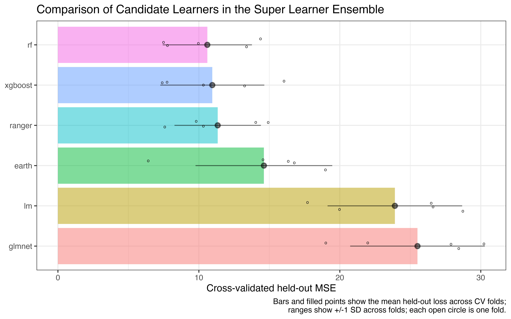
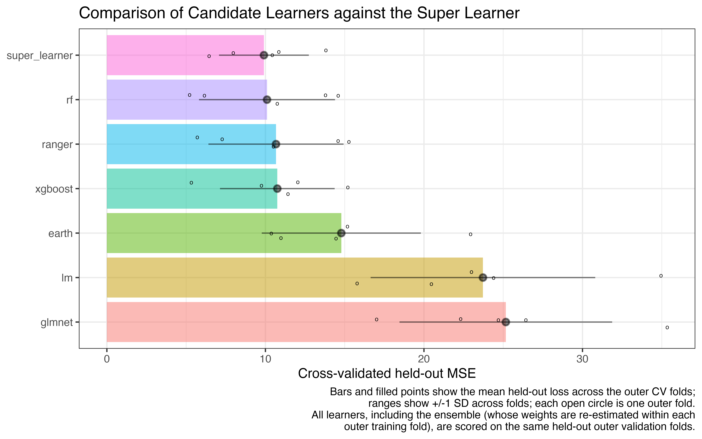
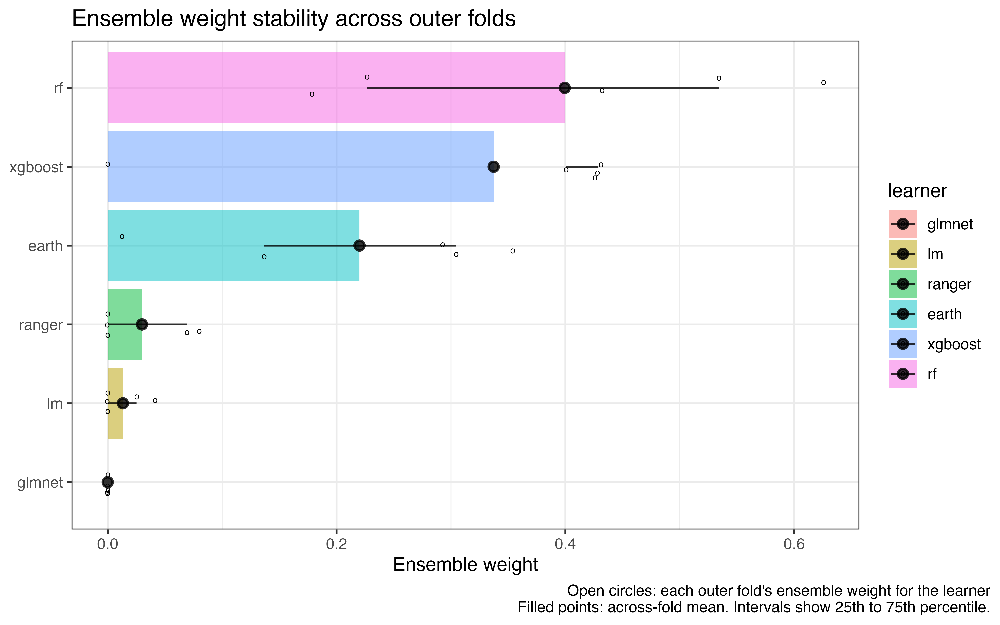
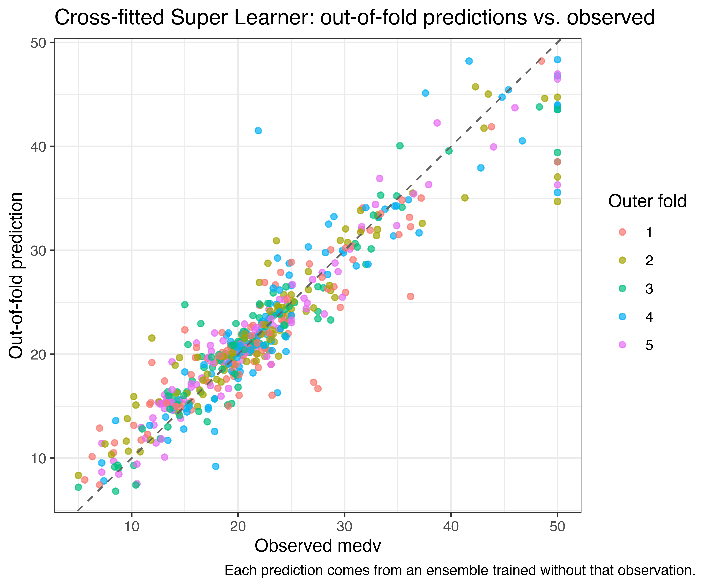
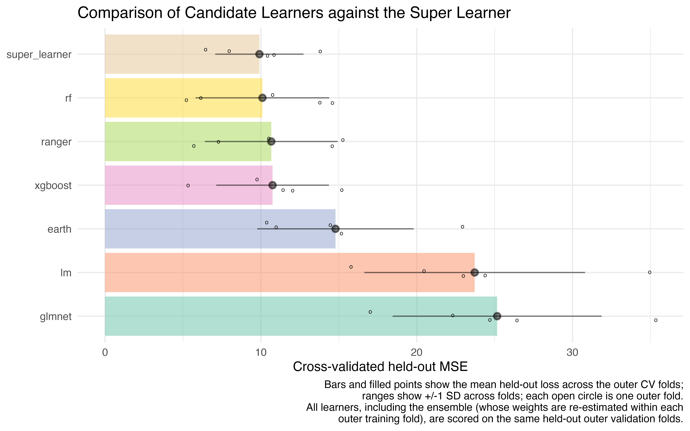

Visualizing Performance
Source:vignettes/articles/Visualizing-Performance.Rmd
Visualizing-Performance.Rmdnadir model objects come with plot()
methods, so visualizing how your candidate learners and the super
learner ensemble performed takes one line of code. This article tours
the available plot types and explains which comparison is the
fair comparison to make.
Throughout we’ll use the Boston housing data and a moderately diverse library of learners:
data("Boston", package = "MASS")
learners <- list(
lm = lnr_lm,
rf = lnr_rf,
ranger = lnr_ranger,
xgboost = lnr_xgboost,
glmnet = lnr_glmnet,
earth = lnr_earth
)
sl_model <- super_learner(
data = Boston,
formulas = medv ~ .,
learners = learners
)
#> Warning: package 'future' was built under R version 4.5.2Comparing the candidate learners
compare_learners() reports each candidate’s
cross-validated held-out loss as a table:
compare_learners(sl_model)
#> Inferring the loss metric for learner comparison based on the outcome type:
#> outcome_type=continuous -> using mean squared error
#> # A tibble: 1 × 6
#> lm rf ranger xgboost glmnet earth
#> <dbl> <dbl> <dbl> <dbl> <dbl> <dbl>
#> 1 23.9 10.6 11.3 11.0 25.5 14.6The default plot() method shows the same information
visually, along with how variable each learner’s performance was across
the cross-validation folds:
plot(sl_model)
For each candidate learner, the bar and filled point show the mean held-out loss across the cross-validation folds, each circle mark shows one fold’s held-out loss, and the range shows plus or minus 1 standard deviation across folds. Learners are ordered best (lowest mean loss) at the top.
So where is super learner in this plot?
Without additional work, we can’t fairly judge super learner yet because we don’t have the super learner’s held-out loss value.
A super_learner() fit chooses its ensemble weights
using the candidates’ holdout predictions, so scoring the
ensemble on those same holdouts would be optimistically biased. The
ensemble gets to see the data that it would be evaluated on.
plot(sl_model) therefore compares only the candidates,
which were each scored honestly on held out data.
To score the ensemble itself fairly, we need another layer of
cross-validation. That’s the purpose of
cv_super_learner().
Honestly evaluating the super learner
cv_results <- cv_super_learner(
data = Boston,
formulas = medv ~ .,
learners = learners
)
plot(cv_results)
Now the super_learner row appears alongside the
candidates, and the comparison is a level playing field: within each
outer fold, the candidate fits and the ensemble weights were all
estimated entirely without the validation data they’re evaluated on, and
every learner was trained on the same outer training data.
Ensemble weight stability
How consistently does the super learner weight its candidates when
the training data changes? type = "weights" shows the
ensemble weights estimated within each outer fold:
plot(cv_results, type = "weights")
Tight clusters indicate an ensemble that is stable under resampling. If a learner’s weights vary wildly from fold to fold, that’s a sign the data don’t strongly distinguish it from its competitors (or that it’s unstable); missing points would indicate folds where a learner errored and was dropped.
Predictions vs. observed outcomes
Finally, type = "fitted" plots out-of-fold ensemble
predictions against the observed outcomes, with the identity line for
reference:
plot(cv_results, type = "fitted")
Every prediction here comes from an ensemble trained entirely without
that observation, so systematic deviations from the identity (45-degree)
line would reflect shortcomings of the overall super learned model fit.
The same view is available for a plain super_learner() fit
via plot(sl_model, type = "fitted"), using its
cross-validated holdout predictions.
Customizing the plots
Each plot() method returns a ggplot object,
so the usual ggplot2 grammar applies if you want to
restyle them:
plot(cv_results) +
ggplot2::scale_fill_brewer(palette = "Set2") +
ggplot2::theme_minimal()
If you need something the plot methods don’t offer, the raw materials
are all retained on the fitted objects: per-fold holdout predictions
live in sl_model$holdout_predictions, and the per-fold
super_learner() fits from the outer cross-validation live
in cv_results$crossfit.